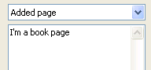
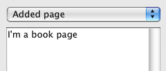

| Version: 2.9.4 |
#include </home/zeitlin/src/wx/github/interface/wx/choicebk.h>
 Inheritance diagram for wxChoicebook:
Inheritance diagram for wxChoicebook:wxChoicebook is a class similar to wxNotebook, but uses a wxChoice control to show the labels instead of the tabs.
For usage documentation of this class, please refer to the base abstract class wxBookCtrl. You can also use the Notebook Sample to see wxChoicebook in action.
wxChoicebook allows the use of wxBookCtrlBase::GetControlSizer(), allowing a program to add other controls next to the choice control. This is particularly useful when screen space is restricted, as it often is when wxChoicebook is being employed.
This class supports the following styles:
The following event handler macros redirect the events to member function handlers 'func' with prototypes like:
Event macros for events emitted by this class:
wxEVT_COMMAND_CHOICEBOOK_PAGE_CHANGED event. wxEVT_COMMAND_CHOICEBOOK_PAGE_CHANGING event. This event can be vetoed (using wxNotifyEvent::Veto()). |  |  |  |
| wxMSW appearance | wxGTK appearance | wxMac appearance |
Public Member Functions | |
| bool | Create (wxWindow *parent, wxWindowID id, const wxPoint &pos=wxDefaultPosition, const wxSize &size=wxDefaultSize, long style=0, const wxString &name=wxEmptyString) |
| Create the choicebook control that has already been constructed with the default constructor. | |
| wxChoice * | GetChoiceCtrl () const |
| Returns the wxChoice associated with the control. | |
| wxChoicebook () | |
| Constructs a choicebook control. | |
| wxChoicebook (wxWindow *parent, wxWindowID id, const wxPoint &pos=wxDefaultPosition, const wxSize &size=wxDefaultSize, long style=0, const wxString &name=wxEmptyString) | |
| Constructs a choicebook control. | |
| wxChoicebook::wxChoicebook | ( | ) |
Constructs a choicebook control.
| wxChoicebook::wxChoicebook | ( | wxWindow * | parent, |
| wxWindowID | id, | ||
| const wxPoint & | pos = wxDefaultPosition, |
||
| const wxSize & | size = wxDefaultSize, |
||
| long | style = 0, |
||
| const wxString & | name = wxEmptyString |
||
| ) |
Constructs a choicebook control.
| bool wxChoicebook::Create | ( | wxWindow * | parent, |
| wxWindowID | id, | ||
| const wxPoint & | pos = wxDefaultPosition, |
||
| const wxSize & | size = wxDefaultSize, |
||
| long | style = 0, |
||
| const wxString & | name = wxEmptyString |
||
| ) |
Create the choicebook control that has already been constructed with the default constructor.
Reimplemented from wxBookCtrlBase.